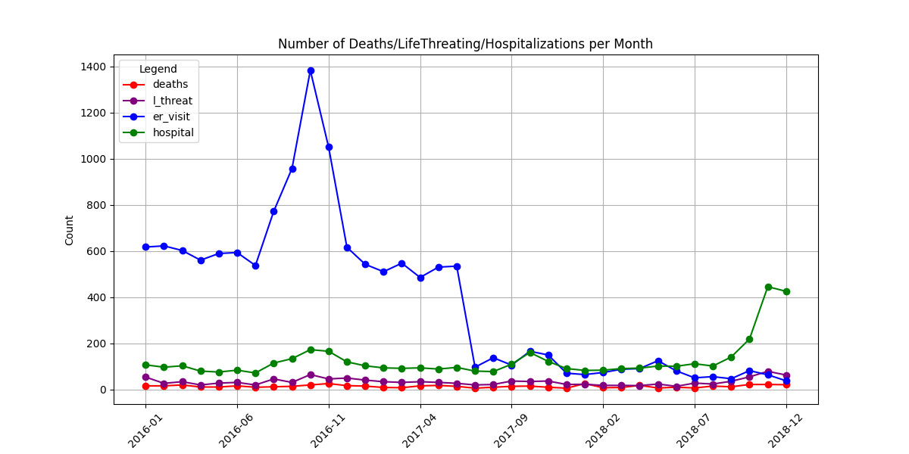

Deaths over time per month 1999-2023

Deaths over time per week 2020-2023

Deaths, Hospital Visits, and life threatenting conditions, over time per month 1999-2023

Deaths, Hospital Visits, ER visits, and life threatenting conditions, over time per month 1999-2023

So what happened in 2017 to ER visits?
Let's zoom in to see that something happened in June of 2017
